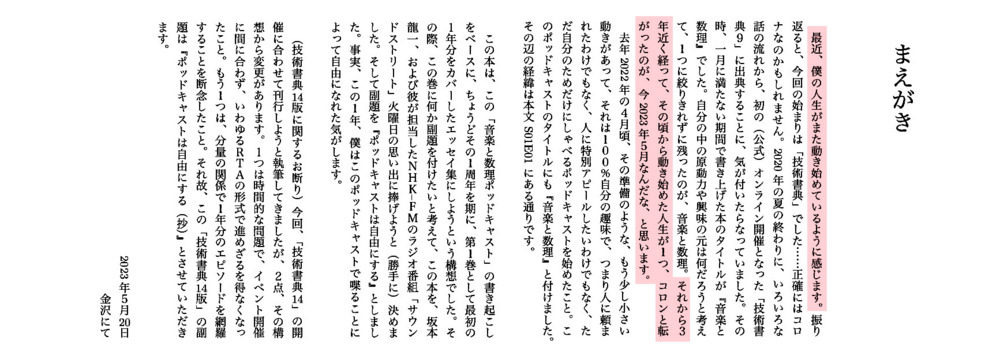
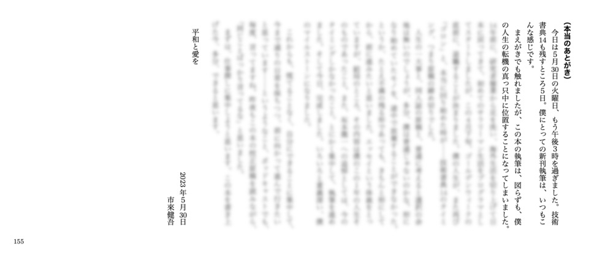
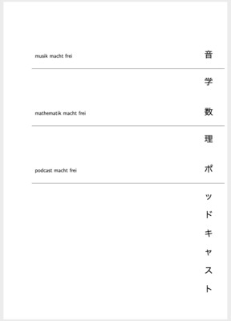
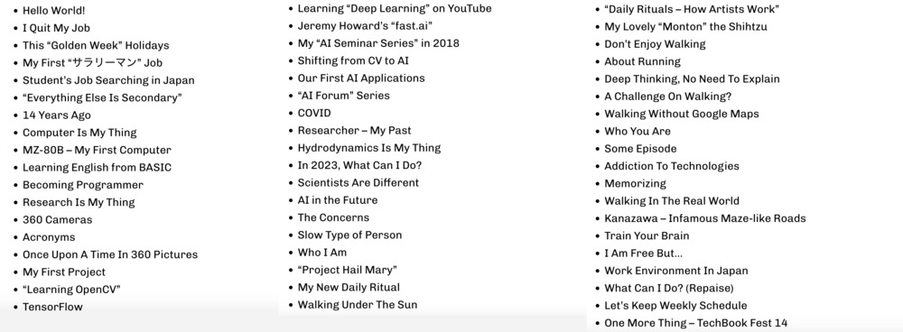
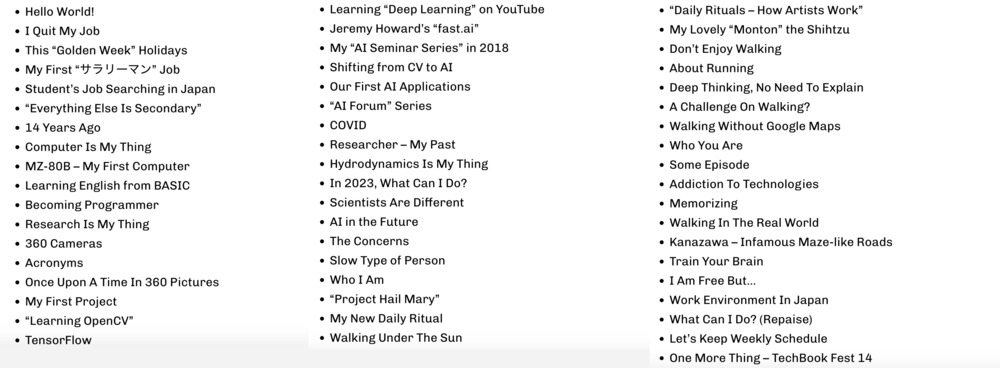

こんにちわ！ AI FORUM
2023 年 5 月 31 日
2023 年 5 月 31 日
＜本日のテーマ＞
技術書典１４絶賛開催中！
目次
- ネタ
- [7:00 - 8:00] パート１ 技術書典１４
- [8:00 - 9:00] パート２ ＡＩフォーラムは自由にする
- 今日のおわりに
- 総合目次
パート１
技術書典１４
絶賛開催中！

サークル・プロジェクト
『ZAM 季報 VOL.3』
『ZAM 季報 VOL.3』
個人プロジェクト
『エッセイ 音楽と数理
ポッドキャストは自由にする』
『エッセイ 音楽と数理
ポッドキャストは自由にする』
- これまでの進捗
- 無事、書き上げました！
エッセイ 音楽と数理 ポッドキャストは自由にする（抄）

- 諸般の事情で、あまり大々的に宣伝するのが憚られるので、
（小さな声で言いますが）
興味があったら、
是非、
お手に取ってみてください！


「諸般の事情」とは……
- なんだかんだと、この４月、５月は、
３つの出来事が同時に起きた
１つ目 - 憚られる理由
- 坂本龍一さんが亡くなったこと

- みんなが予感していたことで、それぞれに心の準備はしていたことだと思いますが、
それがいつやってくるのかは誰も知らなかったこと - 今回、このエッセイ集の副題を
Podcast macht frei
- 「音楽と数理ポッドキャスト」の中でも、
途中になって、やっと、
ぼくが坂本龍一のラジオから受けた影響などを述べて、 感謝の気持ちを表明してきた理由 - 自叙伝『音楽は自由にする』を買って、読んだのも、そういう気持ち
- そのように、ある意味、「急いで行動した」理由は、
追悼ビジネス、糞食らえ
- ある人に対して感謝の気持ちを述べるならば、
亡くなった後ではなく、
生きているうちにするべきだと思ったから
- ある人に対して感謝の気持ちを述べるならば、
- このエッセイ集を、このタイミングで、どうしても出す必要があったのは、
彼が今、亡くなったからなんだけど、 - 同時に、「反追悼ビジネス」という考えを持っているので、
（それは今も全く変わらずそう思っているので）、
今ここで、こういう文脈で、「僕の本を買ってください」とは言えないし、
言いたく無いという気持ちがある- だから、僕の気持ちの上では、
純粋に僕の作ったモノとして「買ってください」という気持ちで言うことで、
折り合いをつけている（つもり）
- だから、僕の気持ちの上では、
２つ目 - よいこと
- 「音楽と数理ポッドキャスト」が４月８日で
１周年を迎えました！
- この１年の歩み
- S01E01 〈Music+Talk〉音楽と数理とは（All of You）
- S01E02 〈トーク〉最近の読書から – 意識と俳句と道元と
- S01E03 〈ショート〉LA LA LA in F
- S01E04 〈Music+Talk〉自分でリクエスト – 日本のポップス特集
- S01E05 〈裏〉日本のポップス特集 – 自己解説
- S01E06 〈ピアノ〉プラクティス・セッション – 2022年春のわたし
- S01E07 (English) Hello, World!
- S01E08 〈トーク〉人生の定理 – エマソン「自己信頼」
- S01E09 〈ショート〉ぼくの趣味 – 種から育てる園芸
- S01E10 〈ピアノ〉今日の練習 – 新レパートリー Golden Slumbers
- S01E11 〈Music+Talk〉ジャズの新潮流 – 鼻歌系特集
- S01E12 〈裏〉ジャズの新潮流 – 鼻歌系特集
- S01E13 (English) Google I/O and Some Idea of WaoN Project
- S01E14 〈トーク〉近況 – コンダラとアカデミアとワクチンと
- S01E15 〈ピアノ〉最近の練習 – 譜面で学ぶ Porgy, Nardis, The American
- S01E16 (English) My New Gears and My Birthday and The Museum
- S01E17 〈Music+Talk〉シブリク特集
- S01E18 〈裏〉シブリク特集 – 追憶とアーカイブと同人誌
- S01E19 〈ピアノ〉最近の練習 – Twitch挑戦と転調と10th
- S01E20 (English) Noise Reduction and Community Economy and Planting
- S01E21 〈トーク〉2022年7月9日 – 日常を生きることと愛と平和
- S01E22 〈Music+Talk〉空耳特集
- S01E23 〈裏〉空耳特集 – 鼻ぺちゃと人生の基本とVulcan Salute
- S01E24 〈トーク〉復活、忙殺されず丁寧に生きること、
技術書典１３、正法眼蔵と「竜とそばかすの姫」
- S01E25 (English) Busy 3 Months and Publishing Book on Amazon
and Matrix Multiplication - S01E26 〈Music+Talk〉Louis Cole 特集
- S01E27 〈裏〉Louis Cole 特集 – ブログとしてのポッドキャスト、音楽を感じる瞬間、
アンチ流行主義 - S01E28 〈ピアノ〉練習再開！ – 新レパートリーは Louis Cole
- S01E29 〈トーク〉腰痛とブログと世界で本を売る話
- S01E30 (English) Recap of Japanese Episodes and DIY Planting and Community
- S01E31 〈Music+Talk〉My “2022 Recap”
- S01E32 〈裏〉My “2022 Recap” 今年の音楽の振り返り
- S02E01 〈ピアノ〉2022年の振り返りと、新レパートリー？
- S02E02 〈トーク〉2022年エピソード・ランキング年間ベストテン
- S02E03 (English) My 2023 New Year’s Resolution and Future with AI
- S02E04 〈Music+Talk〉ピアノ課題曲のお手本
- S02E05 〈裏〉ピアノ課題曲のお手本
- S02E06 〈ピアノ〉新レパートリーは坂本龍一？
- S02E07 〈トーク〉柄にもなく時事評論、など
- S02E08 (English) Coffee and Yeast and Paper Book
- S02E09 〈音楽〉坂本龍一特集
- S02E10 〈ピアノ〉 The Peacocks と Drop 2
- S02E11 〈トーク〉真剣なコミュニケーションについて
- S02E12 (English) A Week of Mid March, 2023
- S02E13 〈音楽〉カバー特集
- S02E14 〈ピアノ〉自分自身をトレーニングする
- S02E15 〈トーク〉祝１周年！音楽と数理🎼 ♾ ポッドキャスト
- S02E16 (English) Anniversary and Ryuichi Sakamoto and Voice Changing
- ここまでで
全４８エピソード
- よく喋りましたね
- 今回の新刊
エッセイ 音楽と数理
ポッドキャストは自由にする（抄）
- だから「（抄）」です
- だから、あと３４エピソード、まだ残ってる
- 全部入れたら４００ページを越えますが、構成が完了したら、「（完全版）」として出しかも
３つ目 - 「ゴロン」と
- 『ポッドキャストは自由にする』のまえがきにも書きましたが……
 - これは、「パート２」のはなしですね
- 一応、エッセイのあとがきに、オチではないですが、書きました
 - 思い出しました。この本は同人誌とはいえ、値段のついた頒布物でした
- この「本当のあとがき」は、「買った人だけ」ってことにします。買ってね
パート２
ＡＩフォーラムは自由にする
ＡＩフォーラムは自由にする
あるいは
市來仕事やめたってよ
AI FORUM macht frei ?
- 引用元は、坂本龍一の『音楽は自由にする』です
musik macht frei
- 当初、この意味、というより元の日本語の「音楽は自由にする」の意味を取り違えていました
- つまり、これを
音楽、ぼくは好き勝手にやるよ
（坂本龍一という人のキャラが影響していた、と言い訳を） - しかし、このドイツ語を、グーグル翻訳さんに英訳してもらったところ
music makes you free
音楽は、
あたなを（みんなを）
開放する（自由にする）
- でも、ぼくは、坂本龍一は半分くらいは
オレはオレの好きに音楽をやるよ
（だって、ね。なら、なんで「音楽は、ぼくを、自由にする」にしなかったのか）
- つまり、これを
- というように、当初のぼくの理解は間違ってましたが、
それでも、エッセイ集の副題は
ポッドキャストは自由にする
Podcast macht frei
- 理由は、
このポッドキャストは
ぼくが好き勝手にやるもの
だったけど、同時に
この１年のぼくを開放してくれた
- とか考えながら、デザインしたもの

- 理由は、
- さて、そこで表題のクエスチョン
AI FORUM macht frei ?
- 簡単な方から
- 間違いなく、「AI FORUM」は、基本、 ぼくが好きで勝手にやってきたプロジェクトだった
- 「AI Seminar」の頃から、そう
- ジェレミーがやってることを、ここで、ぼくも、やりたかった
- ピリオド
- さて、「AI FORUM」がぼくを開放してくれたかどうか？
- 新たなチャレンジだった
- そもそも、何かの旗振り役なんかできると思ってなかったし、 してこなかった（むしろ、避けていて）
- いろいろな道を開いてくれた
- イベントの主宰
- コミュニティ活動（および、その意義について考えたこと）
- 同人誌活動、およびそれを通して、
- （再び）コミュニティというものについて
- 出版というビジネスについて（および、ビジネスというものについて）
- 執筆について（モノを作るということ、ゼロから１にすること）
- YouTube 配信、ポッドキャスト配信
- 新たなチャレンジだった
Past, Present, and Future
- 「音楽と数理ポッドキャスト」
５月１４日、１５日収録、５月１９日リリースの S02E20 英語回 

- 各セクションを日本語にしてみましょう
- ハロー、ワールド！
- 仕事やめました
- 今年のゴールデンウィーク
- ぼくの最初のサラリーマンとしての仕事
- 日本の、学生の就職活動（の不思議）
- 「大事なこと以外、すべて些末なこと」
- １４年前
- コンピュータが、ぼくの得意分野
- MZ-80B – ぼくの最初のコンピュータ
- 英語はベーシックから学んだ
- プログラマーになること
- 研究は、ぼくの得意なこと
- パノラマ・カメラ
- 英語の略語、難しい
- パノラマ写真、昔話
- ぼくの最初のプロジェクト
- 本『Learning OpenCV』
- TensorFlow
- YouTubeで「ディープラーニング」を学ぶ
- ジェレミー・ハワードの “fast.ai”
- Computer Vision から AI への転換
- われわれの最初の AI アプリケーション
- 「ＡＩフォーラム」
- コロナ
- 研究者 - ぼくの過去
- 流体力学は、ぼくの得意なこと
- 2023 年の今、ぼくにできることはなにか？
- 科学者は、その他すべての人たちと違う
- 未来のＡＩ
- その心配なこと
- 手の遅いタイプ
- ぼくは何者か？
- 本『プロジェクト・ヘイル・メアリー』
- ぼくの新しい「毎日の儀式」
- 太陽の元の散歩
- 本『Daily Rituals – How Artists Work』
- ぼくらの可愛いモンちゃん
- 歩くことを楽しむのではなく
- 走ることについて
- 深く考えることについて、説明はいらない
- 散歩でのチャレンジ？
- グーグルマップなしでの散歩
- あなたは何者か？
- あるエピソード
- テクノロジー依存症
- 暗記すること
- 現実の世界の中を歩く
- 金沢 - その迷路のような道
- 自分の頭を鍛えろ！
- ぼくは自由だ、しかし……
- 日本の労働環境
- ぼくにできることはなにか？（再び）
- とりあえず、週１のペースは守りましょう
- 最後にもう１つ、技術書典１４
仕事探し
「できること」と「できないこと」
についての考察、その１
についての考察、その１
できないこと（やらないこと）
- できないこと（やらないこと）
- よく分かってないことを、分かったように言うこと
- 自分が正しいと思ってないことを、他人にすすめること
- マルチタスク
- 「要領がいい」と認識されること一般
- うむ、書いていて、自分でも思ったけど、
これは、使う側からするとかなり面倒なタイプの人ですね- 実際、過去を省みて思うのは、
ぼくは基本、放置プレイされてきたし、
そういう環境でないと生きていけないみたいだ - その代わり、放置されていても、きちんと働ける
- 実際、過去を省みて思うのは、
「仕事探し」の進捗
- 離職が決まってから今まで、具体的に、仕事探しをしたか？
- 準備段階です
- 言い換えると、「具体的に」は、アクションを起こしてない
- 準備段階です
- 仕事探しと、その他のタスク
- （先に述べたとおり）ついこの間まで、本を書いていました
- （今、ご覧の通り）このイベントを開催しています
- それは、
おかしくないのか？
- 多分、この状況で、他の人（普通の人）なら、
「仕事探し」を、- 「同人誌の原稿の締め切り」や
- 「コミュニティ活動のイベント開催」
- でも、ぼくは、この状況で、これらを先に進めてきた。
それは、どうしてか？
- 多分、この２つのことが、今のぼくにとっては、
同じくらい重要なこと
- 「同人誌の執筆」：この１年のぼくの考えてきたことの総決算
- 「AI FORUM」：ぼくの AI に関する活動の原動力
- その意味では、これも「仕事探し」の一環という認識だった （言い訳かな？）
- １度「やる」と言ったことは、やり切っておきたい
- 途中までやって、中断したモノは、ほぼ全て、やらなかったのと同じになる （経験として）
- どんな形、どんなレベルでも、「完成」させないと、無駄になる（ゼロになる）
- そのおかげで、昨日、ようやく「エッセイ集」も完成した。
この出来事は個人的に大きいし、
この本の存在自体も、その意味は大きい
- そして、今日のこのイベント
さて、今日は、どんな出来になるかな？
ぼくにできること
- ぼくにできること - つまり、ぼくの経験から
- アカデミアの経験
- 物理の博士号。
- プロとして１０年以上。
- 一応、世界レベルの一流の研究グループで働いてきたと思う
- （足を洗って、１４年経ちます）
- サラリーマンの経験（直近１４年）
- プログラマ（エンジニア）として
- チームリーダー、プロジェクトマネージャとして
- 海外での就労経験
- 英語
- コミュニティの運営
- 英会話サークル、この「AI FORUM」
- アカデミアの経験
- ぼくの昔からある（今の最新の）ホームページ
(kichiki.github.io)
- サラリーマン時代（プログラマ、エンジニア）の職務経歴
- 今、まとめてるところです（……って、ダメじゃん）
- 表に出してるものとしては……
あ、特許１つ、通りましたね、日本と中国で
Google Patent: 双眼立体視画像の提供方法、観察装置及びカメラユニット
- 「AI FORUM」のこれまでのリスト（の一部）
https://hello-ai-forum.github.io/pages/


{kind=link}
{kind=link}
{kind=link}
{kind=link}
{kind=link}
{kind=link}
ぼくがやりたいこと
- それは、一言でいうと
「人類のために働きたい」
- 先日、金沢でお世話になったある恩人を訪ねた時、誤解されました
- １０代や２０代の人たちがいうフレーズとしてではなく、
ま、かつて世界を放浪したり、日本の地方都市でサラリーマンをやった人間として、 なんだけど - つまり、
自分の所属する
組織（あるいは企業（あるいは国））
のため「だけ」に
働きたくはない
- このことを１００％実現しようと思ったら、普通のセンスでは、私企業では働けないのかな？
- もちろん、そんなことはないと思ってます
- 「よい」私企業は、「人類」のために、仕事をしていると思うので
- 仕事の内容は、もちろん
ＡＩに関わる仕事
- 直近の（応用者としての）実務経験
- その前の、科学者としての経験
- アカデミアと実社会の両方を深く経験していること
- 英語を使えるので、世界の中で働ける
- という、個別の要素はあるけれど、
本質的には
人類を救いたい
- はい、いわゆる「ＡＩによる人類の Existential Risk」ってやつ
- 数ヶ月前に認識した Eliezer Yudkowsky にはじまり、
最近の Goeffrey Hinton のはなしのこと
- 数ヶ月前に認識した Eliezer Yudkowsky にはじまり、
- 「そんなもの真に受けてるのか」と、ヤン・ルカンには言われそうですが
- 「真に受けてる」というか、
（核燃料の廃棄処理と同じで）未来の優れた人類が解決してくれる、
という考えに見えるので - それに、今、あと数日で５５才
- 本気でフルタイムの仕事やるとして、１０年以上、きちんとやりたい
- 今から１０年の間に、 確実に、いわゆる「シンギュラリティ」（と呼ばれるもの）が起きるでしょう
- 今、いろいろ問題が指摘されている
- 今のぼくの仕事選びについて、
１０年後に、自分自身で後悔したくない - そのことが、実際問題としては、一番大きいかな
- はい、いわゆる「ＡＩによる人類の Existential Risk」ってやつ
- なので、
ＡＩの「基礎研究」関連の仕事
- チャンスがほしいです
- そもそも、この分野は、万人にとって「新しい」分野だと思うし
- 自分の経験を生かせる部分はたくさんあるとおもう
- 蛇足：こういう、今のぼくの気持ちのムードを、背後でプッシュしてるのは、
もしかしたら、これかもしれない……（だとしたら、オレって結構、軽薄だな）
今日のおわりに
……
今後の予定
- 次回「こんにちわ！ AI FORUM」は 2023 年 6 月 24 日（土曜日）開催の予定です。
- 気分を変えて、週末の土曜日に開催するようにしようかなと考えてます
- ご意見、ご希望など、お気軽に！
- フォーラム講演者、サークル同人誌活動への執筆者、絶賛、大募集中です！
お気軽にお問い合わせください！
総合目次
- 第１部 技術書典１４
- 第２部 ＡＩフォーラムは自由にする
- 今日のおわりに